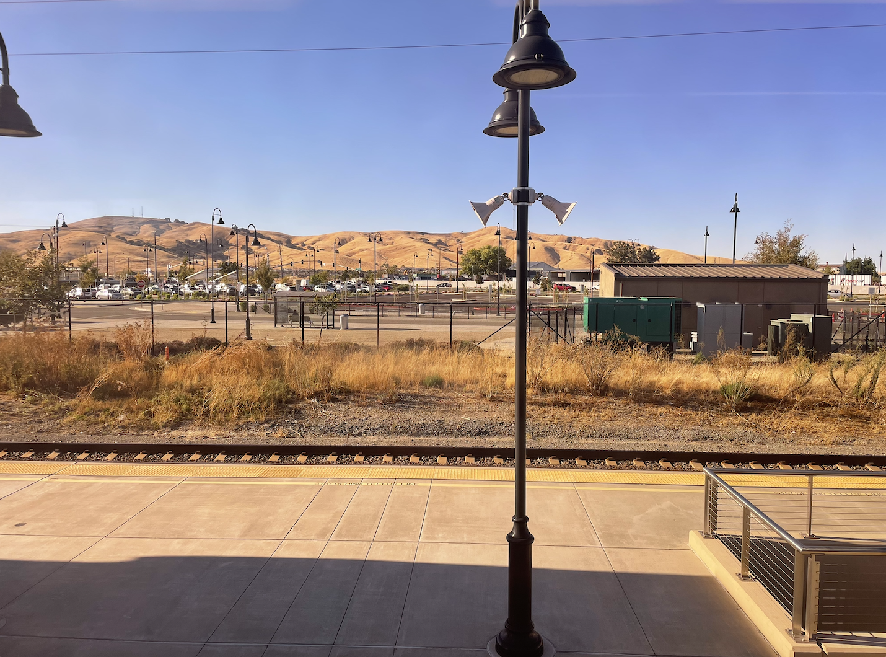
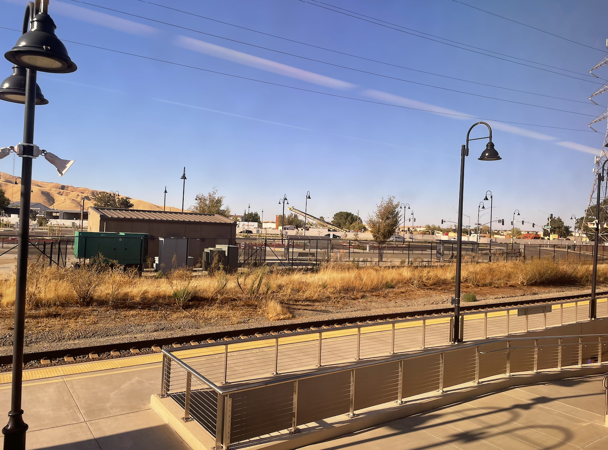
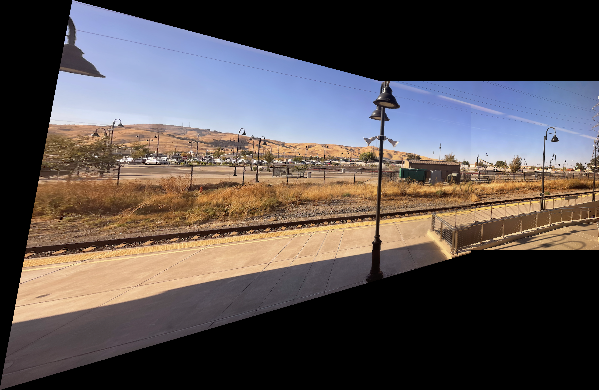

Project 3: [Auto]Stitching Photo Mosaics
*Although this is written in first-person plural (just preference), the project was completed by myself individually.
Part 1: Image Warping & Mosaicing
Shooting our Pictures
Consider the below pairs of images, which are taken from the same center of projection (COP), with one being rotated at more of an angle.
Hearst Mining (angled left):

Hearst Mining (angled straight):

Railroad (angled straight):

Railroad (angled right):

Boba (angled left)

Boba (angled straight)

The goal for this part of the project is to combine these images together (panoramic stitching), and we'll walk through the steps for how to do so!
Recovering Homographies
To stitch our images together, we first need to figure out warp one of the images to fit the other. Taking the above boba example, we cannot simply glue the two images together (even after doing some preliminary cropping), otherwise it will be obvious that the two images were taken from different angles.
Step 1: Find Correspondencies
We start by finding the correspondencies between the two images, manually selecting points that are easily identifiable (e.g. corners) & appear in both images.
From the boba image from earlier, we selected the below points, numbered in red (9 total). All the points appear in both images (e.g. the left tops of the cabinet handles), and all points are easily identifiable (to reduce human error when selecting the corresponding point).
Left Image Points:

Right Image Points:

Here are the left image's and right image's point coordinates, respectively. We'll call the left image's points (x, y), and the right image's points (u, v).
 , $(x, y)= $
, $(x, y)= $

Detour: Homography Matrix
Turns out, warping our image is just a linear transformation of our pixels! We also call this a homography, and we represent our transformation as a homography matrix that can be applied to every pixel (hence the "linear" in linear transformation).
To transform our (x, y) coordinate to (u, v), we can multiply it by our homography matrix:

We can fix the last element of our homography matrix ($i$) to 1, since this is just a scaling factor. Then, taking the above matrix and solving for $u$ and $v$, we obtain the following equation. $h$ is a vector containing $a$ through $h$.

Below is a generalized version of our $Ah = b$, where we have multiple correspondencies selected, making our $A$ matrix tall (two rows per correspondence). We can then use least squares to solve for $h$ (which will be homography matrix).

 $=$
$=$

Step 2: Solving for Homography Matrix
Going back to our boba example, we have our (x, y) and (u, v) points, so we can plug them directly into our equation and solve for our homography matrix!
- Using the format $Ah = b$, we know all the values in $A$ and $b$, so we can solve for all the values in $h$ using least squares.
- By construction, $h$ is a vector form of our homography matrix, without the $9^{th}$ element (scaling factor), 1. Thus, we append $1$ to $h$, then reshape it to $3x3$ to get our homography matrix.

 $=$
(vector of $u_i$ and $v_i$ from values above)
$=$
(vector of $u_i$ and $v_i$ from values above)
Homography matrix:

Step 3: Applying the Homography Matrix
Now that we've obtained our homography matrix, let's apply it to our image to verify that it works! Going back to the boba example, we'll apply the homography matrix to our left image, warping the left image (x, y points) to the right image (u, v points). We notice that the points in the warped left image and in the right image now line up relative to each other!
Left Image, Warped:

Right Image (Unmodified):
Here's a zoomed in version of the above images, so you can actually see that the points line up, and that the images look like they're taken from one angle.
Left Image, Warped (Zoom):

Right Image (Unmodified, Zoom):

(So how do we actually line up the warped left image and the right image? We'll cover that below in "Mosaicing"!)
Warping Images
Earlier, how did we apply our homography matrix to our image? We cannot simply apply the homography to every pixel in our original image, then map it to the location in our warped image. For some intuition as to why, image if our warped image's dimensions were much bigger. Then, not every pixel in our warped image will be filled, if we mapped every input pixel to it.
Instead of forward warping, we'll use inverse warping! That way, we won't have unfilled holes in our warped image, since we're reverse mapping from the warped pixel to the original pixel(s). First, we'll find the inverse of our $H$ matrix, to find where every warped pixel "lands" in our original image. Then, we'll interpolate the value based on the nearby landed pixels (since our "landing" spot isn't always a perfect integer coordinate). We'll consider two methods for interpolation:
- Nearest Neighbor Interpolation: we round our "landing" (x, y) to the nearest integer, then use that pixel's value.
- Pros: NN is faster, since we only consider one value per pixel (no averaging). NN also doesn't hallucinate, meaning that all colors shown are colors that are present in the original image.
- Cons: NN can result sharp edge artifacts, such as unwanted edges when interpolating a curve.
- Bilinear Interpolation: we'll find the four pixels neighboring our "landing" position, then take their weighted
average depending on their x and y distances from the "landing" position.
- Pros: Bilinear gives better/smoother transitions, i.e. no unwanted sharp artifacts.
- Cons: Bilinear is slower because of the averaging. Because it has smoother results, it may have worser results if sharp edges are desired.
Below are some examples of images we rectify with homographies, using both NN and bilinear interpolation. We performed the rectification by picking an object in the image that has a known shape (e.g. a window should be shaped as a rectangle), then choosing the resulting (u, v) points based on that known shape.
Box of Tea (Original):

NN:

Bilinear:

Akira Window (Original):

NN:

Bilinear:

Physics Building (Original):

NN:

Bilinear:

Berkeley Seal (Original):

NN:

Bilinear:

In the above images, it's a bit difficult to see the difference between NN and bilinear interpolation, since our image dimensions were relatively large. It seems preferable to use NN interpolation, just because it's faster and doesn't look different compared to the bilinear interpolation result.
Barcode:

The NN image actually looks a bit nicer than the bilinear image, since we want barcode lines to be sharp! However, we can see some edge artifacts in both images (likely due to the homography itself), and those are more obvious in the NN image.
Shrub + Cups:

Again, we see that the NN image is sharper, though it could be argued that the bilinear image looks more natural (the shrub is more smoothly colored). But, as mentioned before, since this is such a small part of our image, the tiny differences don't make a significant visual difference - can you spot these differences clearly in the original image?
Mosaicing
After warping an image, how can we stitch it together to another?
Step 1: pad warped im2 and original im1 such that 1) the minimum and maximum x and y coords are captured, and 2) the (x, y) and (u, v) points line up
Left, Warped:
Left, Warped + Padded:

Right, Original:
Right, Warped + Padded:

Step 2: apply masks to the images (binary alpha mask, or linear alpha mask)
Binary alpha mask: for overlap region, values are 0.5 from left image and 0.5 from right image
Linear alpha mask: for overlap region, an image will have more weight on columns it is closer to
Left:
Left w/ Binary Alpha:

Left w/ Linear Alpha:

Right:
Right w/ Binary Alpha:

Right w/ Linear Alpha

Step 3: add the results together!
Naive Adding :( (but cool colors)

Binary Alpha Mask:

Linear Alpha Mask:

Left Image

Right Image

Binary Alpha Merge

Linear Alpha Merge

Left Image
Right Image
Binary Alpha Merge

Linear Alpha Merge